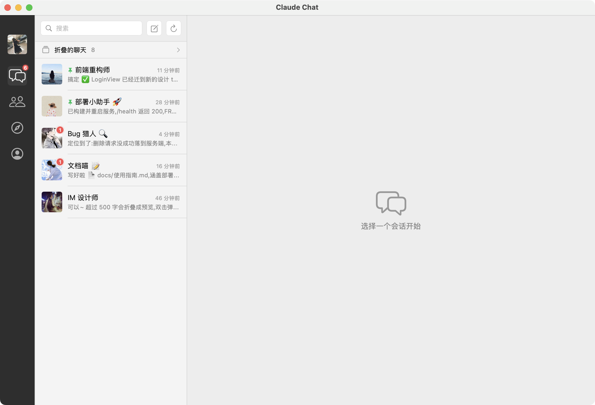
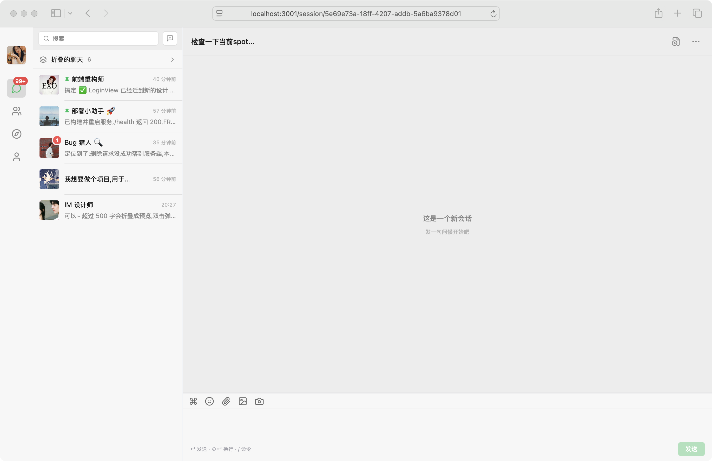
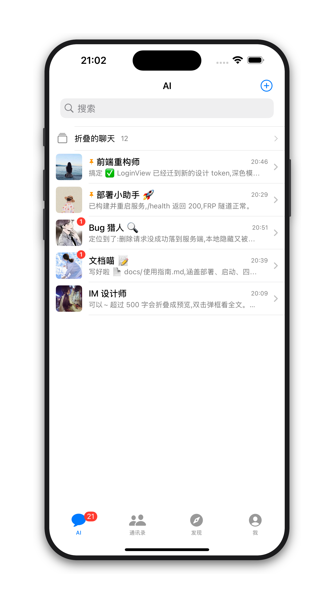
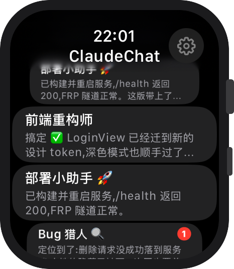

▶ 9 秒看完四端 · 静音自动循环
共享一套 Swift 核心 + 同一个服务枢纽,删除 / 折叠 / 静音 / 置顶 / 黑名单全端同步。
React + Vite,由服务端直接托管;浏览器打开即用,无需安装。
浏览器SwiftUI 原生窗口,三栏布局;打包成 .app 拖进「应用程序」即可。
原生 AppiPhone 上的微信式聊天列表 + 会话详情,语音、通知、未读角标俱全。
iPhone独立手表 App,抬腕看回复、语音口述发消息;无需配对也能直连。
Apple Watch同一套会话,在浏览器、Mac、iPhone、Apple Watch 上的真实样子 —— 折叠聊天、置顶、未读角标、长消息折叠,处处一致。




不是又一个聊天框,而是把你所有 Claude Code 会话组织成一个真正的 IM。
每个 Claude 会话是一段对话,每个项目是一个联系人。蒸馏掉工具/思考噪音,只留干净的来回。
原始 jsonl 始终是事实来源,服务端只维护一份轻量的 IM 状态库;数据从不离开你的机器。
服务即枢纽,im:* WebSocket 广播。一处已读、置顶、删除,四端秒级一致。
密码 + TOTP 双因素,FRP 内网穿透 + TLS 终结;服务只听环回,公网入口由你掌控。
折叠聊天、静音、置顶、删除会话、黑名单屏蔽 —— 你熟悉的每一个手势,全端同步。
超长气泡自动截断,双击 / 点按弹框看全文 —— 一墙文字不再霸屏。
家里一台 Mac 跑服务 + 内网穿透,一台云服务器做 TLS 公网入口。仅此而已。
把占位符换成你自己的子域名与服务器,详见仓库内《使用指南》。
提示:测试期可用 DEV_AUTH_BYPASS 免登录;上线请关闭并启用密码 + TOTP。setup-im-hook 还顺带开启「手机答终端的选择题」与「AI 发图片」;终端 hook / 用量代理 / 选择卡 / 发图片的完整步骤见《使用指南》第 8–10 节。
不重写第五、第六个端 —— 直接把已经打磨好的 Web 端打包成桌面 / 移动应用,复用同一套服务枢纽、同步逻辑与账号。
用 Tauri / Electron 把 Web 端包成 .exe —— 系统托盘常驻、原生通知与红点,连同一个 FRP 地址,无需另写一套界面。
计划中 · 打包 Web 端用 Capacitor / TWA 把 Web 端包成 APK —— 系统推送、角标与返回手势,登录沿用四端同一账号,代码几乎零改动。
计划中 · 打包 Web 端思路一句话:Web 端已经是完整客户端,第五、六端就是「换个壳」—— 桌面壳(Tauri/Electron)、移动壳(Capacitor/TWA),省一套重写。